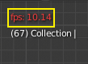
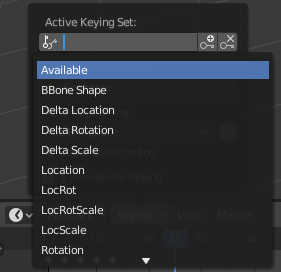

时间线¶
The Timeline editor, identified by a clock icon, is used for manipulating keyframes and scrubbing the playhead.

时间线。¶
时间线 通过显示当前帧，活动对象的关键帧，动画序列的开始和结束帧以及用户设置的标记，为用户提供场景动画的全面概览。
时间线 包括 传输控制 ，用于播放，暂停和跳过动画序列。
它还包括用于操作 关键帧， 键控集 和 标记 的工具。
主视图¶
主 时间线 区域随时间显示动画帧。

在这里你可以看到 关键帧 (菱形)， 播放头 (蓝色手柄)， 滚动条 (沿着底部).
调整视图¶
可以通过按住 MMB ，然后向左或向右拖动区域来平移 时间线 。
您可以使用以下命令缩放 时间线 Ctrl-MMB , 鼠标 Wheel , 或者按 NumpadMinus 和 NumpadPlus .
您还可以使用位于编辑器底部或右侧的滚动条来平移和缩放视图。
播放头¶
播放头 是蓝色垂直线，顶部是当前帧编号。

播放头。¶
通过在时间线顶部的擦洗区域按住或按住 LMB， 可以将 时间指针 设置或移动到新位置。
播放头 可以按 Left 或 Right 以单帧增量移动,或者可以通过按 Shift-Left 或 Shift-Right 跳转到开始或结束帧。
帧范围¶
默认情况下, 帧范围 设置为从帧 1 开始,在帧 250 处结束。您可以更改时间线标题右上角或``输出属性``中的帧范围。
关键帧¶
对于活动对象和选定对象,关键帧显示为菱形。
您可以单击以一次选择一个,或者通过按住 Shift, 或拖动关键帧周围的框来选择多个。然后,您可以通过拖动单个键来移动单个键,并且可以通过按 G 移动多个键,然后用 S 缩放它们。
只能启用 选定的频道. 。对于 骨架, 这将显示对象关键帧.以及活动和选定姿势骨骼的关键帧。
标题栏¶
菜单¶
回放弹出¶

回放 弹出窗口包含控制动画播放的选项。
- 同步
- 
3D视图红色帧速率（FPS）。¶
播放动画时，帧速率显示在3D视图的左上角。如果场景详细且播放速度低于设置 帧速率，则这些选项用于同步播放。
- 播放每一帧
即使播放缓慢，也会播放每一帧。
- 丢帧
如果播放速度慢于场景的帧频，则丢帧。
- 同步到音频
如果播放速度太慢而无法与音频保持同步，则丢帧。
- 音频
- 拖擦播放
If your animation has sound, this option plays bits of the sound wave while you move the playhead with LMB or keyboard arrows (like a moving playhead).
- 屏蔽
将任何音频源的声音静音。
- 回放
- 限制回放至帧范围
不允许使用鼠标选择播放范围之外的帧。
- 跟随当前帧
可以将动画编辑器设置为在动画播放时始终跟随时间指示器。在设置动画和更改帧时，将跟随：当游标到达屏幕末端时，将显示下一个相同宽度的帧范围。
- 播放位置
- 活动编辑器
播放时，如果禁用 动画编辑器 和 所有3D视图 ，则更新时间线。
- 3D 视图
在播放时，更新3D视图和时间线。
- 动画编辑器
播放时，更新时间线、动画摄影表、图形编辑器、视频序列器。
- 图像编辑器
遮罩模式下的图像编辑器。
- 属性编辑器
当动画播放时，这将更新UI中的属性值。
- 影片剪辑编辑器
播放时更新影片剪辑编辑器。
- 节点编辑器
播放时，更新节点编辑器的节点属性。
- 视频序列编辑器
播放时，更新视频序列器。
- 显示
- 子帧
显示并允许更改当前场景子帧。
插帧弹出菜单¶
插帧 弹出菜单包含影响关键帧插入的选项。
- 活动插帧集
- 
时间线插帧集。¶
插帧集 是一组关键帧通道。它们是用于用户可以同时记录多个属性。选择关键帧组合后，当你插入关键帧时，Blender将为活动 插帧集 中的属性添加关键帧。有一些内置的关键帧组合，LocRotScale 以及自定义关键帧组合。可以在面板中定义自定义插帧集设置 。
- 插入关键帧（加号图标）
在当前帧插入当前关键帧组所中包含属性的关键帧。
- 插入关键帧（减号图标）
在当前帧删除当前关键帧组所中包含属性的关键帧。
- 新建关键帧类型
插入时 关键帧类型 .
- 循环感知插帧
当将关键帧插入 简单循环曲线 时，将应用特殊处理来保持循环完整性（在调整已建立的循环时最有用）：
如果在循环的主时间范围之外尝试键插入，则将其重新映射回范围内。
When overwriting one of the end keys, the other one is updated appropriately.
自动插帧弹出菜单¶

时间线自动关键帧。¶
记录按钮（⏺）启用 自动关键帧：在3D视图中对其进行变换时，它将添加和/或替换活动物体的现有关键帧。例如，启用后，首先将播放头设置为所需的帧，然后在3D视图中移动物体，或在UI中为属性设置新值。
When you set a new value for the properties, Blender will add keyframes on the current frame for the transform properties. Other use cases are Fly/Walk Navigation to record the walk/flight path and Lock Camera to View to record the navigation in camera view.
Note
请注意， 自动关键帧 仅适用于3D视图中（即，无法使用它，例如在属性编辑器中为材质的颜色设置动画……）的变换属性（物体和骨骼）。
- 添加&替换/替换
控制自动插入关键帧模式的运行。每个时刻只能用一种模式。
- 添加&替换
添加或者替换已有关键帧。
- 替换
仅替换已有的关键帧。
- 仅活动插帧集
启用后，新的属性关键帧将插入到活动的 插帧集 中。
- 分层记录
为动画上的每个循环/通道添加一个新的非线性动画轨道和片段，以便进行无损调整。
菜单¶
视图菜单¶
视图菜单 控制着你看到的一切，以及他们的样式。
- 显示秒数 Ctrl-T
是否显示在X轴和时的播放头作为帧（基于FPS）或秒。
- 同步可见范围
当设置此选项时，它会将当前编辑器的水平平移和缩放与其他编辑器（曲线编辑器，动画摄影表，非线性动画和视频序列编辑器）同步。 这样，您总是让这些编辑器显示帧的相同部分。
- 显示标记
显示标记区域。禁用后， 标记菜单 也将隐藏，且标记操作在编辑器中不再可用。
- 仅选择的通道的关键帧
对于 骨架 ，这将显示对象关键帧，以及活动和选定姿势骨骼的关键帧。
- 缓存
- 显示缓存
显示所有启用的缓存类型。
Soft Body, Particles, Cloth, Smoke, Dynamic Paint, Rigid Body.

时间线缓存。¶
- 查看所有 Home
根据动画范围最大化区域。
- 跳转到当前帧 Numpad0
将播放头置于时间线中心。
标题栏控制按钮¶
标题栏控件。